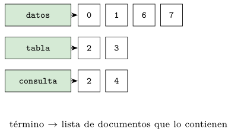
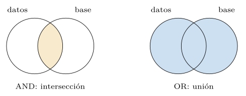
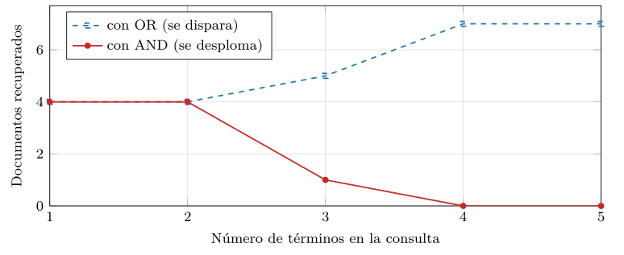
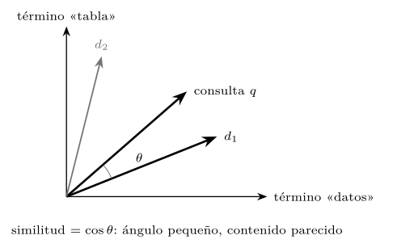
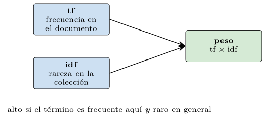
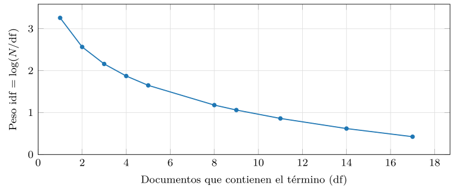
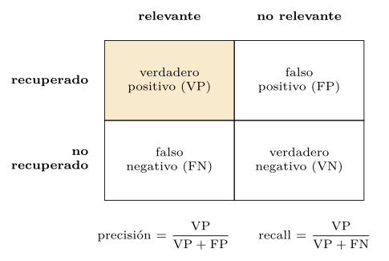
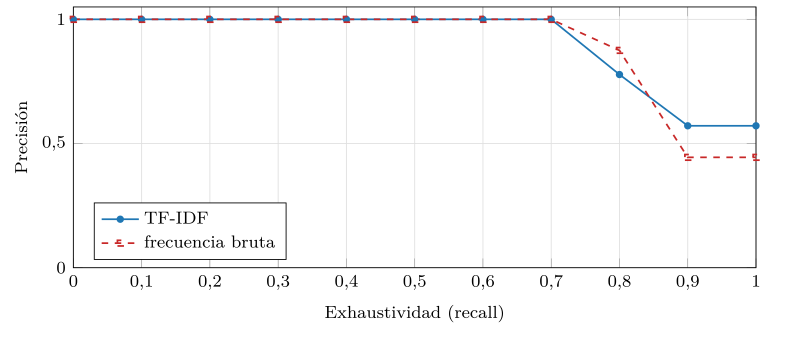
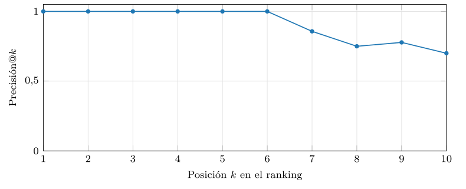
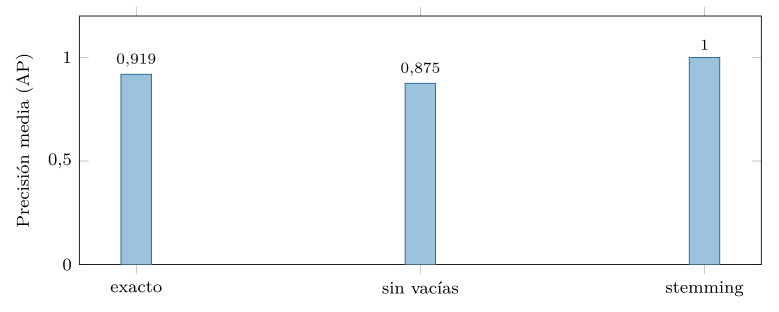

Capítulo 10. Recuperación de información clásica
La segunda parte cerró con un giro anunciado: tras dos partes enteras buscando coincidencias exactas —la fila con este identificador, la clave con este nombre, la palabra con esta cadena—, el libro vira hacia la similitud, hacia el cercano a. Esta tercera parte da ese giro, y conviene empezarlo donde de verdad empezó: no en las redes neuronales de hace una década, sino en la recuperación de información documental de los años setenta. Porque la idea central de todo lo vectorial —representar un contenido como un vector y medir su parecido por la proximidad entre vectores— no la inventó el aprendizaje profundo. La inventó Gerard Salton, y la similitud coseno que hoy mueve los buscadores semánticos y las bases vectoriales existe, esencialmente sin cambios, desde 1975.
Este capítulo recupera esa tradición. Empieza por el modelo booleano, la recuperación como álgebra de conjuntos —este término Y aquel, este O el otro—, y muestra sus límites: no sabe ordenar, no tolera que la palabra buscada no sea exactamente la escrita, y oscila entre devolver demasiado y no devolver nada. De ahí pasa al modelo de espacio vectorial de Salton, que resuelve el problema del orden representando documentos y consulta como vectores y comparándolos por el coseno del ángulo que forman. Introduce la ponderación TF-IDF, que decide cuánto vale cada término —mucho si es frecuente aquí y raro en general—, y cierra con las medidas de evaluación —precisión, exhaustividad, sus curvas— sin las cuales no se puede decir si un buscador es bueno.
Como en los capítulos anteriores, nada de esto se afirma sin medirlo. El módulo de la práctica construye, en Python puro, un buscador clásico completo sobre un corpus real reducido, y mide cuatro cosas: cómo el booleano se desploma o se dispara, cómo el peso IDF castiga lo común, qué forma tiene la curva precisión-exhaustividad y cómo la precisión se degrada al pedir más resultados. El lector saldrá con la intuición que vertebra toda la cuarta parte: que buscar por parecido es medir distancias en un espacio de representaciones, y que lo único que el resto del libro cambiará —en el capítulo 11 y siguientes— es cómo se construye ese vector, del disperso de TF-IDF al denso aprendido. La idea de comparar por proximidad, en cambio, ya está aquí.
Conviene situar el capítulo en el arco de la tercera parte, que va de la idea a su forma moderna. Este capítulo aporta la idea —representar y comparar por proximidad— con vectores dispersos y literales. El capítulo 11 contrastará esa representación dispersa con la densa, y explicará por qué pocas dimensiones con significado superan a muchas con palabras. El capítulo 12 mostrará cómo el aprendizaje profundo construye esos vectores densos —de word2vec a los transformers y los modelos multimodales—. Y el capítulo 13 estudiará la geometría del espacio donde viven, las distancias y las rarezas de la alta dimensión. Los cuatro comparten el hilo que aquí empieza: que buscar es medir cercanía; lo que cambia, capítulo a capítulo, es la calidad del vector sobre el que esa cercanía se mide.
El modelo booleano y sus límites
La recuperación documental empieza con una estructura y un modelo. La estructura es el índice invertido: para cada término del vocabulario, la lista de los documentos que lo contienen —su posting list— (figura 10.1). Es la misma idea del índice del capítulo 3, ahora del término al documento en lugar del valor a la fila, y es lo que hace barata la búsqueda: en vez de leer todos los documentos, se va directo a la lista del término buscado.

Construirlo es recorrer cada documento una vez y, por cada término distinto que aparece, añadir el documento a su lista (listado 10.1). Una pasada por el corpus, y queda lista la estructura sobre la que todo lo demás se apoya.
def indice_invertido(corpus):
idx = {}
for d, texto in enumerate(corpus):
for t in set(texto.lower().split()):
idx.setdefault(t, set()).add(d) # el doc d contiene t
return idxListado 10.1. Construir el indice invertido: termino a conjunto de documentos que lo contienen.
El índice puede guardar, además de qué documentos contienen el término, cuántas veces lo hacen —la frecuencia— y en qué posiciones, datos que el modelo vectorial necesitará para los pesos y que las búsquedas por frase usan (listado 10.2). El índice invertido es, así, la estructura común a los dos modelos de este capítulo: el booleano usa solo la lista de documentos; el vectorial, también las frecuencias.
def indice_con_frecuencias(corpus):
idx = {}
for d, texto in enumerate(corpus):
for t, c in Counter(texto.lower().split()).items():
idx.setdefault(t, []).append((d, c)) # (doc, frecuencia)
return idx
# idx["datos"] -> [(0,1), (1,1), (6,2), (7,1)]: doc 6 lo usa dos vecesListado 10.2. Indice invertido con frecuencias: termino a (documento, veces que aparece).
El modelo booleano consulta ese índice como un álgebra de conjuntos (figura 10.2): una consulta es una combinación de términos con los operadores AND, OR y NOT, y el resultado es la intersección, la unión o el complemento de sus listas (listado 10.3). «base AND datos» devuelve los documentos que contienen ambos; «base OR datos», los que contienen alguno. Es exacto, rápido y predecible: el documento está o no está en el resultado.

AND es la intersección —a menudo pequeña o vacía— y OR la unión —a menudo enorme—. No hay punto medio ni orden entre los resultados.def consulta_and(idx, terminos):
conjuntos = [idx.get(t, set()) for t in terminos]
return set.intersection(*conjuntos) if conjuntos else set()
def consulta_or(idx, terminos):
return set().union(*(idx.get(t, set()) for t in terminos))Listado 10.3. Recuperacion booleana: interseccion (AND) y union (OR) de las posting lists.
Los tres límites del booleano
Esa exactitud es, a la vez, su perdición, por tres motivos. El primero es que no ordena: el resultado es un conjunto, no una lista ordenada por relevancia, así que un documento que menciona el término una vez de pasada vale lo mismo que otro que trata exactamente de él. Para diez resultados da igual; para diez mil, es inútil, porque no dice cuáles mirar primero.
El segundo es la rigidez del tamaño del resultado, que la práctica mide (figura 10.3). Encadenar términos con AND para afinar hace que el resultado se desplome: cada término nuevo solo puede quitar documentos, y basta uno poco común para dejar la intersección en cero. Aflojar con OR para no quedarse sin nada hace lo contrario, lo dispara: cada término añade documentos, y pronto devuelve medio corpus. No hay punto medio cómodo: el usuario oscila entre demasiados resultados y ninguno. La traza del listado 10.4 sigue ese desplome término a término: cada AND estrecha la intersección hasta que un término poco frecuente la vacía, y a partir de ahí no hay forma de afinar.
datos -> {0,1,6,7} (4 docs)
datos AND base -> {0,1,6,7} (4 docs)
datos AND base AND relacional -> {0} (1 doc)
... AND consulta -> {} (0 docs: vacio)Listado 10.4. Traza de una consulta booleana con AND: la interseccion se estrecha hasta vaciarse.

AND el resultado se desploma (aquí, a cero con cuatro términos) y con OR se dispara. Datos de src/cap10_tfidf.py.El tercero, y el más profundo, es la discordancia de términos (term mismatch): el modelo casa cadenas exactas, así que «tabla» no encuentra los documentos que dicen «tablas», ni «coche» los que dicen «automóvil». La palabra buscada y la escrita han de coincidir letra por letra, y el lenguaje natural —con sus plurales, sinónimos y variantes— viola esa exigencia todo el tiempo. Es el límite que ni el modelo vectorial de este capítulo resuelve del todo, y que solo las representaciones densas del capítulo 11 atacarán de raíz. La discordancia se ve de un ejemplo (listado 10.5): la consulta «tabla» no recupera el documento que dice «tablas», ni «médico» el que dice «doctor», porque para el modelo son cadenas sin ninguna relación, en dimensiones distintas del espacio. El sistema no entiende que significan lo mismo; solo compara letras.
consulta "tabla" -> NO encuentra "...una tabla muy grande" si dice
"tablas" (cadena distinta)
consulta "medico" -> NO encuentra "...el doctor receto..." (sinonimo)
consulta "coche" -> NO encuentra "...el automovil arranco..."
# el modelo compara cadenas, no significadosListado 10.5. Discordancia de terminos: cadenas distintas no se encuentran, aunque signifiquen lo mismo.
Los tres límites apuntan en la misma dirección: hace falta graduar la relevancia en lugar de decidir pertenencia —y para graduar hace falta medir—, y hace falta comparar significados y no cadenas —lo que ni este capítulo ni el modelo vectorial resolverán del todo—.
El modelo de espacio vectorial
La respuesta de Salton (Salton et al. 1975) a la falta de orden fue un cambio de representación tan simple como fecundo: si cada término del vocabulario es una dimensión, entonces cada documento es un vector en ese espacio —con un número por término, que mide cuánto pesa ese término en el documento— y la consulta es otro vector más en el mismo espacio. Buscar deja de ser comprobar pertenencia a un conjunto y pasa a ser medir la proximidad entre el vector de la consulta y el de cada documento (figura 10.4).

¿Cómo se mide esa proximidad? No por la distancia entre las puntas de los vectores —que confundiría un documento largo con uno corto del mismo tema—, sino por el ángulo entre ellos: dos documentos sobre lo mismo apuntan en la misma dirección aunque uno sea diez veces más largo. La medida es la similitud coseno, el coseno de ese ángulo (listado 10.7): vale uno cuando los vectores están perfectamente alineados —máximo parecido—, cero cuando son perpendiculares —sin términos en común—. Dividir por las normas de los dos vectores es lo que descarta el efecto de la longitud y deja solo la dirección.
Un cálculo con números lo concreta (listado 10.6). Sean dos documentos representados, en un espacio de dos términos «base» y «cocina», por los vectores \(d_1=(3,0)\) —habla de bases de datos— y \(d_2=(0,2)\) —habla de cocina—, y una consulta \(q=(2,1)\). El coseno de \(q\) con \(d_1\) es \(\frac{2\cdot3}{\sqrt5\cdot3}=0{,}89\) —muy alineados—; con \(d_2\), \(\frac{1\cdot2}{\sqrt5\cdot2}= 0{,}45\) —menos—. El ranking pone \(d_1\) por delante, como debe, y nótese que si \(d_1\) fuera \((30,0)\) —el mismo tema diez veces más largo— su coseno seguiría siendo \(0{,}89\): la longitud no cuenta, solo la dirección.
espacio de 2 terminos: (base, cocina)
d1 = (3, 0) d2 = (0, 2) consulta q = (2, 1)
cos(q, d1) = (2*3 + 1*0) / (sqrt(5) * 3) = 6/6.7 = 0.89
cos(q, d2) = (2*0 + 1*2) / (sqrt(5) * 2) = 2/4.5 = 0.45
-> ranking: d1 antes que d2
con d1 = (30, 0) (10x mas largo): cos(q,d1) = 0.89 (igual)Listado 10.6. Coseno con numeros: la consulta se parece mas al documento con el que se alinea, y la longitud no influye.
def coseno(a, b):
comunes = set(a) & set(b)
num = sum(a[t] * b[t] for t in comunes)
na = math.sqrt(sum(v * v for v in a.values()))
nb = math.sqrt(sum(v * v for v in b.values()))
return num / (na * nb) if na and nb else 0.0Listado 10.7. Similitud coseno entre dos vectores dispersos: el coseno del angulo, indiferente a la longitud.
El cambio es decisivo, y conviene no pasarlo por alto: el modelo vectorial ordena. En lugar de un conjunto sin jerarquía, devuelve todos los documentos ordenados por su coseno con la consulta, de más a menos parecido. Resuelve de un golpe los dos primeros límites del booleano: hay orden —se sabe qué mirar primero— y hay coincidencia parcial —un documento que comparte algunos términos con la consulta puntúa algo, no queda fuera por no tenerlos todos—. La consulta ya no es una criba binaria sino una dirección en el espacio, y los documentos se alinean con ella en grados. La tabla 10.1 sitúa los tres modelos clásicos de un vistazo, incluido el probabilístico —que ordena por la probabilidad de que un documento sea relevante, y cuyo heredero práctico es el BM25 (Robertson y Zaragoza 2009)—. Los tres comparten el supuesto del término literal; lo que los distingue es qué hacen con él: filtrar, medir ángulos o estimar probabilidades.
| Modelo | Decide la relevancia por | ¿Ordena? |
|---|---|---|
| Booleano | pertenencia a conjuntos | no |
| Vectorial | coseno del ángulo | sí |
| Probabilístico | probabilidad estimada (BM25) | sí |
Observación. Aquí está, en su forma más pura, la idea que da título al libro y que la cuarta parte llevará al límite. «Buscar» se ha convertido en «encontrar los vectores más próximos a un vector de consulta». El igual a —pertenecer a un conjunto— ha cedido al cercano a —tener el ángulo más pequeño—. Todo lo que viene después —los embeddings densos del capítulo 12, los índices vectoriales del capítulo 14, las bases vectoriales de la cuarta parte— es refinamiento de esta idea de 1975: cambiará cómo se construye el vector y cómo se buscan los más próximos a gran escala, pero no la noción de que el parecido es proximidad. Quien entiende el coseno de Salton entiende ya el corazón de una base de datos vectorial.
La ponderación TF-IDF
Queda decidir qué número poner en cada dimensión del vector: cuánto pesa cada término en cada documento. La opción ingenua —la frecuencia bruta, cuántas veces aparece el término— tiene un defecto fatal: las palabras más frecuentes son las menos informativas. «De», «la», «una» aparecen en todos los documentos y no distinguen ninguno; si pesaran por su frecuencia, dominarían el vector y dos documentos se parecerían por compartir artículos, no contenido. Hace falta una ponderación que premie lo que discrimina.
La solución, que combina dos señales, es TF-IDF (figura 10.5). La primera señal es la frecuencia del término (TF, term frequency): cuántas veces aparece el término en el documento —cuanto más, más representativo de este documento—. La segunda es la frecuencia documental inversa (IDF, inverse document frequency), debida a Spärck Jones (Spärck Jones 1972): cuánto discrimina el término en la colección, medido como \[\mathrm{idf}(t) = \log\frac{N}{\mathrm{df}(t)},\] donde \(N\) es el número de documentos y \(\mathrm{df}(t)\) cuántos contienen el término \(t\). El peso de una dimensión es el producto \(\mathrm{tf}\times\mathrm{idf}\): alto solo cuando el término es frecuente aquí y raro en general.

El factor IDF es el que hace el trabajo fino, y su forma se mide (figura 10.6). Como es el logaritmo de \(N/\mathrm{df}\), vale mucho para un término que aparece en uno o dos documentos —es muy específico— y cae hacia cero para uno que aparece en casi todos —no distingue nada—. En el corpus de la práctica, un término en un solo documento pesa más de tres; uno en diecisiete de los veintiséis, menos de medio. La curva castiga, suave pero inexorablemente, lo común.

src/cap10_tfidf.py.Con esto, el vector de un documento es su lista de pesos TF-IDF, uno por término que contiene (listado 10.9). Es un vector disperso: tiene tantas dimensiones como términos hay en el vocabulario —decenas de miles— pero casi todas valen cero, porque un documento usa solo un puñado de palabras distintas. Esa dispersión —muchas dimensiones, pocas no nulas— es el rasgo que el capítulo 11 contrastará con el vector denso, donde todas las dimensiones cuentan.
Un ejemplo con números fija las ideas (listado 10.8). Sea un corpus de cuatro documentos donde «relacional» aparece en uno solo y «de» en los cuatro. El IDF de «relacional» es \(\log(4/1)=1{,}39\); el de «de», \(\log(4/4)=0\). Así, en el documento que contiene «relacional una vez y de tres veces», el peso de «relacional» es \(1\times1{,}39=1{,}39\) y el de «de» es \(3\times0=0\): la palabra rara manda y la común desaparece, por mucho que se repita. El coseno con una consulta se calcula solo sobre los términos compartidos con peso no nulo, de modo que «de» no aporta nada a la similitud aunque esté en ambos. El TF-IDF, en suma, hace que dos textos se parezcan por lo que tienen de específico en común, no por los artículos que comparten.
corpus de N=4 documentos
idf("relacional") = log(4/1) = 1.39 (aparece en 1)
idf("de") = log(4/4) = 0.00 (aparece en los 4)
documento con tf(relacional)=1, tf(de)=3:
peso(relacional) = 1 * 1.39 = 1.39 <- manda
peso(de) = 3 * 0.00 = 0.00 <- desapareceListado 10.8. Ejemplo numerico: el peso TF-IDF hunde la palabra comun y realza la rara.
def vector_tfidf(texto, idf):
tf = Counter(texto.lower().split())
return {t: c * idf.get(t, 0.0) for t, c in tf.items()}Listado 10.9. El vector TF-IDF disperso de un texto: tf por idf, una entrada por termino presente.
Refinamientos de la ponderación
El TF-IDF básico admite mejoras que la práctica de la recuperación fue acumulando, y conviene conocerlas porque siguen vivas en los buscadores de hoy. La primera es normalizar la frecuencia: contar la frecuencia bruta hace que un documento que repite un término diez veces pese diez veces más, lo que rara vez refleja diez veces más relevancia; por eso se suele usar la frecuencia logarítmica, \(1+\log(\mathrm{tf})\), que amortigua las repeticiones (listado 10.10). La segunda es el preprocesado del texto: descartar las palabras vacías (stop words) —«de», «la», «que»—, que no discriminan, y aplicar stemming —reducir «tablas», «tabla» y «tablero»1 a una raíz común—, que ataca parte de la discordancia de términos.
def tf_log(c):
return 1 + math.log(c) if c > 0 else 0.0 # amortigua repeticiones
VACIAS = {"de", "la", "el", "una", "un", "en", "y", "con", "los"}
def normalizar(texto):
palabras = [stem(p) for p in texto.lower().split()
if p not in VACIAS]
return palabras
def stem(p): # stemming minimo
for suf in ("es", "s"):
if p.endswith(suf) and len(p) > 4:
return p[:-len(suf)]
return pListado 10.10. Refinamientos: frecuencia logaritmica, palabras vacias y un stemming minimo de plurales.
El refinamiento más influyente es BM25, hoy el estándar de hecho en los buscadores por palabras clave. BM25 parte del TF-IDF pero corrige dos cosas: satura la frecuencia —a partir de unas pocas apariciones, una más apenas suma— y penaliza la longitud —un documento largo tiene más términos por puro tamaño, y BM25 lo descuenta— (listado 10.11). Es la demostración de que la familia de Salton sigue evolucionando medio siglo después; pero, y esto es lo que importa para el libro, todas estas variantes comparten el supuesto de fondo —el término como dimensión literal— y por tanto el límite de la discordancia que ninguna resuelve.
def bm25(tf, idf, long_doc, long_media, k=1.5, b=0.75):
norm = 1 - b + b * (long_doc / long_media) # penaliza longitud
return idf * (tf * (k + 1)) / (tf + k * norm) # satura tfListado 10.11. La ponderacion BM25: satura la frecuencia y penaliza la longitud del documento (k y b son sus parametros).
Medidas de evaluación
Un buscador que ordena necesita una forma de decir si ordena bien, y para eso hace falta saber, de antemano, qué documentos son relevantes a una consulta. Con ese juicio de relevancia, cada documento recuperado cae en uno de cuatro casos (figura 10.7): es relevante y se recuperó (verdadero positivo), no lo era y se recuperó (falso positivo), lo era y se quedó fuera (falso negativo), o ni era ni se recuperó (verdadero negativo). De ahí salen las dos medidas fundamentales.

La precisión es la fracción de lo recuperado que es relevante: de lo que el buscador devolvió, cuánto acierta. La exhaustividad (recall) es la fracción de lo relevante que se recupera: de lo que debía encontrar, cuánto encontró. Las dos están en tensión: devolver pocos documentos muy seguros da alta precisión y baja exhaustividad; devolver muchos para no perderse nada da alta exhaustividad y baja precisión. La medida F1 las resume en su media armónica cuando se quiere un solo número. La media armónica —y no la aritmética— se usa a propósito porque castiga el desequilibrio: un sistema con precisión \(1{,}0\) y recall \(0{,}1\) tiene media aritmética \(0{,}55\) pero F1 de solo \(0{,}18\), que refleja mejor que es un sistema malo (listado 10.12). Para tener un F1 alto hay que ser bueno en las dos medidas, no compensar una pésima con otra excelente.
def f1(precision, recall):
if precision + recall == 0:
return 0.0
return 2 * precision * recall / (precision + recall)
# precision=1.0, recall=0.1 -> media aritmetica 0.55, pero F1 = 0.18Listado 10.12. La medida F1 (media armonica) castiga el desequilibrio entre precision y recall.
La curva precisión-exhaustividad
Como el modelo vectorial ordena, se puede recorrer el ranking de arriba abajo y, en cada punto, calcular la precisión y la exhaustividad acumuladas. El resultado es la curva precisión-exhaustividad (figura 10.8), la herramienta de evaluación por excelencia de la recuperación: al bajar por la lista se recuperan más relevantes —sube la exhaustividad— pero también más basura —baja la precisión—, y la curva traza ese intercambio. Un buscador es mejor que otro si su curva queda por encima: más precisión a igual exhaustividad. La práctica la calcula para el ranking TF-IDF y para el de frecuencia bruta, y el primero mantiene mejor la precisión cuando se exige recuperar casi todo, justo donde la ponderación importa.

src/cap10_tfidf.py.Precisión en los primeros resultados
A menudo lo que importa no es toda la curva sino la cabeza del ranking: lo que el usuario ve en la primera pantalla. La precisión@k mide qué fracción de los \(k\) primeros resultados es relevante (figura 10.9). Se mantiene alta mientras los primeros documentos son aciertos y cae cuando, agotados los relevantes, empiezan a colarse los que no lo son. Y la precisión media (AP), que promedia la precisión en cada posición donde aparece un relevante, resume el ranking entero en un número; su media sobre muchas consultas, la precisión media promediada (MAP), es la cifra con la que se comparan sistemas de recuperación.

src/cap10_tfidf.py.El primer paso hacia lo denso: la semántica latente
Antes de cerrar la tradición clásica conviene nombrar el puente que ella misma tendió hacia lo denso, porque no fue el aprendizaje profundo quien primero intentó capturar significado en un vector. Ya en los años noventa, la indexación semántica latente (LSA) (Deerwester et al. 1990) atacó la discordancia de términos con una idea puramente algebraica. Si se dispone la colección como una matriz término-documento —una fila por término, una columna por documento, con los pesos TF-IDF—, esa matriz es enorme y dispersa, y sus filas son los vectores literales que sufren la discordancia. LSA la factoriza —por descomposición en valores singulares— y se queda solo con las pocas dimensiones más importantes, comprimiendo miles de términos en, digamos, trescientas dimensiones latentes.
El efecto de esa compresión es notable, y anticipa todo lo que viene. Las dimensiones latentes ya no son términos sino combinaciones de términos que tienden a coaparecer: una dimensión puede agrupar «coche», «automóvil» y «vehículo» porque suelen salir en los mismos documentos. Así, dos textos que usan sinónimos distintos acaban cerca en el espacio latente aunque no compartan ninguna palabra literal: la discordancia de términos se atenúa, no por preprocesar el texto, sino por descubrir la estructura de coaparición. Y el vector resultante es denso —trescientas dimensiones, casi todas no nulas— en lugar de disperso.
Observación. LSA es el eslabón perdido entre Salton y los embeddings neuronales. Comparte con TF-IDF el punto de partida —la matriz término-documento— y con el capítulo 12 el destino —un vector denso de unos cientos de dimensiones donde la proximidad captura significado—. Lo que cambia del uno al otro es cómo se obtienen esas dimensiones: LSA las extrae con álgebra lineal de la matriz de coaparición; los modelos neuronales las aprenden de cantidades ingentes de texto, capturando relaciones mucho más ricas. Pero la idea —comprimir lo disperso y literal en lo denso y semántico, conservando la proximidad como medida de parecido— es la misma, y nace aquí, en la prolongación natural del modelo vectorial. El capítulo 11 la recoge para hacer del paso de lo disperso a lo denso su tema central.
Práctica: un buscador clásico, medido
Las cuatro gráficas anteriores salen de un mismo módulo, src/cap10_tfidf.py —Python puro, sin servicio ni GPU, según la tabla de recursos—, que construye un buscador completo sobre un corpus de veintiséis documentos cortos: ocho sobre bases de datos —los relevantes a la consulta— y dieciocho de otros temas, con palabras comunes que hacen interesante la ponderación. Sobre él corren el índice invertido, la recuperación booleana, el ranking por coseno con TF-IDF y las medidas de evaluación, todo con una consulta cuya relevancia se conoce de antemano.
El corpus es reproducible y cabe a la vista (listado 10.13): documentos cortos de cuatro temas, con vocabulario solapado a propósito —«tabla», «de», «una» aparecen en varios— para que la ponderación tenga algo que discriminar. La consulta de evaluación, «consulta sql sobre una base de datos con tablas e índices», tiene como relevantes los ocho de bases de datos, y ese juicio de relevancia es lo que permite medir.
# bases de datos (relevantes a la consulta)
0 una base de datos relacional organiza la informacion en tablas
1 el lenguaje sql permite consultar una base de datos
2 un indice acelera la consulta de una tabla muy grande
3 la clave primaria identifica cada fila de la tabla
4 una consulta sql selecciona filas de varias tablas
5 el modelo relacional de codd define tablas y relaciones
6 normalizar una base de datos elimina la redundancia de datos
7 una transaccion agrupa varias operaciones de la base de datos
# cocina (no relevantes)
8 la receta lleva harina huevos azucar y un poco de sal
9 para el pan se mezcla harina agua y levadura
10 el sofrito empieza con cebolla y aceite de oliva
11 la tarta se hornea en el horno durante cuarenta minutos
12 una buena salsa lleva tomate ajo y aceite
13 el postre se sirve frio y con mucho azucar
# astronomia (no relevantes)
14 las estrellas brillan en el cielo oscuro de la noche
15 un planeta orbita alrededor de una estrella lejana
16 la galaxia contiene muchos millones de estrellas
17 el telescopio observa los planetas mas lejanos
18 la luna es el satelite natural de la tierra
19 un cometa cruza el cielo cada cierto numero de anos
# musica (no relevantes)
20 la guitarra tiene seis cuerdas de metal
21 el piano produce sonido al pulsar las teclas
22 una cancion combina una melodia y un ritmo
23 la orquesta reune muchos instrumentos de viento y cuerdaListado 10.13. El corpus completo de la practica: cuatro temas con vocabulario solapado; los 8 primeros son los relevantes a la consulta.
Las cinco medidas salen de un mismo programa (listado 10.14), que indexa el corpus una vez y encadena los experimentos —booleano, IDF, curva PR, precisión@k y el efecto del preprocesado—, cada uno volcando su tabla a un .dat que las figuras leen. Como en los capítulos anteriores, una semilla fija gobierna la única parte aleatoria —la muestra de la demostración—, de modo que quien ejecute el módulo obtiene exactamente las cifras de este capítulo.
def main():
anunciar() # recursos: python puro, cpu, sin gpu
simular_booleano() # AND/OR -> cap10_booleano.dat
simular_idf() # idf vs df -> cap10_idf.dat
simular_pr() # curva PR -> cap10_pr.dat
simular_pk() # precision@k -> cap10_pk.dat
simular_normalizacion() # preprocesado -> cap10_normalizacion.dat
demostracion(15) # 15 vectores dispersosListado 10.14. El motor del experimento: indexar el corpus y encadenar las cinco medidas.
Las cifras que alimentan las figuras son reproducibles y conviene verlas (listado 10.15): el booleano que se desploma de cuatro documentos a cero al encadenar términos, y el IDF que cae de \(3{,}26\) para un término que aparece una vez a \(0{,}42\) para uno que aparece en diecisiete de veintiséis. Son los números exactos de las figuras 10.3 y 10.6, generados al ejecutar el módulo.
booleano (k terminos): AND: 4, 4, 1, 0, 0 OR: 4, 4, 5, 7, 7
idf segun df: df=1 -> 3.26 df=4 -> 1.87 df=8 -> 1.18
df=11 -> 0.86 df=17 -> 0.42Listado 10.15. Salida medida del modulo: el desplome del AND booleano y la caida del peso IDF con la frecuencia documental.
El núcleo del ranking es directo (listado 10.16): se vectoriza la consulta, se calcula su coseno con cada documento, y se ordena de mayor a menor. Esa media docena de líneas es el buscador entero —la misma estructura que, con vectores densos en lugar de dispersos, reaparecerá en la base vectorial del capítulo 14.
def ranking(consulta, corpus, idf):
q = vector_tfidf(consulta, idf)
sims = [(d, coseno(q, vector_tfidf(texto, idf)))
for d, texto in enumerate(corpus)]
sims.sort(key=lambda x: -x[1]) # de mas a menos parecido
return [d for d, s in sims if s > 0]Listado 10.16. El nucleo del buscador vectorial: coseno de la consulta con cada documento, ordenado.
El buscador entero —índice, ponderación y consulta— cabe en una clase pequeña (listado 10.17), y conviene verla completa porque es, salvo el tipo de vector, la misma arquitectura que tendrá la base vectorial del capítulo 14: se indexa una vez (calcular el IDF y los vectores de los documentos) y luego cada consulta se vectoriza y se compara con todos. La diferencia con lo que viene será que aquellos vectores serán densos y aprendidos, y que la comparación con «todos» se sustituirá por un índice aproximado; la estructura, sin embargo, es esta.
class Buscador:
def __init__(self, corpus):
self.corpus = corpus
self.idf = idf(corpus) # se calcula una vez
self.vectores = [vector_tfidf(t, self.idf)
for t in corpus] # vector por documento
def buscar(self, consulta, k=10):
q = vector_tfidf(consulta, self.idf)
sims = [(d, coseno(q, v))
for d, v in enumerate(self.vectores)]
sims.sort(key=lambda x: -x[1])
return [(d, s) for d, s in sims[:k] if s > 0]Listado 10.17. Un buscador vectorial completo en una clase: indexar una vez, consultar muchas.
Sobre esa clase, una consulta es una línea —Buscador(corpus).buscar("base de datos")— y devuelve los documentos con su puntuación, ordenados. La misma interfaz, con un índice vectorial debajo, será la de un motor de búsqueda semántica.
La evaluación es igual de escueta (listado 10.19): recorriendo el ranking, cada vez que aparece un relevante se anota la precisión y la exhaustividad de ese punto, y de esos puntos sale la curva y la precisión media. Medir un buscador es, literalmente, contar aciertos a medida que se baja por la lista. El listado 10.18 sigue ese recorrido sobre el ranking de la práctica: cada vez que aparece un documento relevante se anota el par (recall, precisión), y esos puntos son la curva. Se ve cómo la precisión se mantiene en uno mientras la cabeza acierta y cae en cuanto, para alcanzar el último relevante, hay que descender entre no relevantes.
pos doc relevante? hits recall precision
1 1 si 1 1/8=.12 1/1=1.00
2 0 si 2 2/8=.25 2/2=1.00
... ... ... ... ... ...
7 5 si 7 7/8=.88 7/7=1.00
14 3 si 8 8/8=1.0 8/14=.57 <- ultimo, hundidoListado 10.18. Traza de la curva PR sobre el ranking: precision y recall en cada relevante recuperado.
hits = 0
for i, d in enumerate(ranking, start=1):
if d in relevantes:
hits += 1
precision = hits / i # de lo visto, cuanto acierta
recall = hits / len(relevantes) # de lo relevante, cuanto vaListado 10.19. El nucleo de la evaluacion: precision y recall en cada relevante recuperado.
Con las piezas montadas, el buscador entero se ejercita en unas líneas (listado 10.20): se calcula el IDF del corpus una vez, se lanza una consulta y se obtienen los documentos ordenados por su coseno con ella. La salida —los primeros documentos del ranking, todos del tema de la consulta— muestra el modelo vectorial haciendo lo que el booleano no sabía: devolver una lista ordenada por relevancia en lugar de un conjunto sin jerarquía.
pesos = idf(CORPUS) # IDF de la coleccion
orden = ranking("consulta sql sobre una base de datos",
CORPUS, pesos, usar_idf=True)
for d in orden[:4]:
print(d, CORPUS[d])
# 1 el lenguaje sql permite consultar una base de datos
# 0 una base de datos relacional organiza ... en tablas
# 4 una consulta sql selecciona filas de varias tablas
# 7 una transaccion agrupa varias operaciones ... base de datosListado 10.20. El buscador completo en accion: indexar, consultar y obtener el ranking por coseno.
El orden no es casual: arriba quedan los documentos que comparten con la consulta los términos más discriminantes —«sql», «consulta», «base», «datos»—, y los que solo comparten palabras comunes ni siquiera aparecen. Es la coincidencia parcial graduada que define al modelo vectorial.
El mismo mecanismo sirve para una operación que el booleano no sabe expresar: «documentos parecidos a este». Basta usar un documento entero como consulta —su propio vector— y pedir los más próximos (listado 10.21); el resultado son los documentos del mismo tema, ordenados por parecido. Es el «más como este» que todo buscador moderno ofrece, y es, en esencia, lo que una base vectorial hará con vectores densos: una búsqueda por vecindad donde la consulta es un objeto, no unas palabras.
def mas_como(doc_id, corpus, idf, k=3):
v0 = vector_tfidf(corpus[doc_id], idf)
sims = [(d, coseno(v0, vector_tfidf(t, idf)))
for d, t in enumerate(corpus) if d != doc_id]
sims.sort(key=lambda x: -x[1])
return sims[:k] # los k documentos mas parecidos
# mas_como(0, ...) -> otros documentos de bases de datosListado 10.21. «Mas como este»: usar un documento como consulta y pedir sus vecinos por coseno.
Una evaluación completa, paso a paso
Conviene ver una evaluación entera de principio a fin, porque junta todas las piezas del capítulo en una secuencia. Se parte de la consulta y su juicio de relevancia —los ocho documentos de bases de datos—, se obtiene el ranking por TF-IDF, y se recorre anotando, en cada posición, si el documento es relevante y qué precisión y recall acumula (listado 10.22).
consulta: "consulta sql sobre una base de datos con tablas e indices"
relevantes = {0,1,2,3,4,5,6,7} (los 8 de bases de datos)
pos doc rel? hits recall prec (recorriendo el ranking)
1 4 si 1 0.125 1.000
2 1 si 2 0.250 1.000
3 0 si 3 0.375 1.000
4 6 si 4 0.500 1.000
5 7 si 5 0.625 1.000
6 2 si 6 0.750 1.000
7 10 no 6 0.750 0.857 <- entra un no relevante
8 13 no 6 0.750 0.750
9 5 si 7 0.875 0.778
...
14 3 si 8 1.000 0.571 <- ultimo relevante, hundidoListado 10.22. Evaluacion completa: del ranking a las metricas, posicion a posicion.
De esa traza salen, directamente, todas las medidas (listado 10.23). La precisión@5 es \(1{,}0\) —los cinco primeros aciertan—; la precisión@10 baja porque entran no relevantes; la precisión media (AP) promedia la precisión en las ocho posiciones donde aparece un relevante; y la curva precisión-exhaustividad es la lista de pares (recall, precisión) de la traza, interpolada. Una sola pasada por el ranking produce el cuadro completo de la calidad del buscador.
precision@5 = 5/5 = 1.000
precision@10 = 7/10 = 0.700
AP = (1.00+1.00+1.00+1.00+1.00+1.00+0.778+0.571)/8 = 0.9187
curva PR = [(0.125,1.0), (0.25,1.0), ..., (1.0,0.571)]Listado 10.23. Las metricas que salen de la traza anterior, de un vistazo.
Repetir esto para muchas consultas y promediar las AP da la MAP, la cifra única con la que se compara un buscador contra otro. La evaluación, en suma, no es más que contar aciertos al bajar por la lista y resumir esa cuenta de varias maneras; pero sin ella no hay forma de saber si un cambio —una ponderación nueva, un preprocesado distinto— mejora o empeora, y por eso es inseparable de la recuperación.
Lo que la práctica enseña, y lo que no
Las medidas confirman lo esperado y, fieles a la honestidad de costumbre, también lo que no. El booleano se desploma y se dispara; el IDF castiga lo común; la curva precisión-exhaustividad desciende y el ranking TF-IDF la sostiene mejor a recall alto. Pero hay dos matices que conviene declarar. El primero: en un corpus tan pequeño y con una consulta de términos ya discriminantes, la ventaja de TF-IDF sobre la frecuencia bruta es modesta —la precisión media apenas mejora—; el IDF luce de verdad en colecciones grandes y con consultas que incluyen palabras comunes, donde castigar lo frecuente cambia el ranking de arriba abajo. El segundo: el buscador hereda la discordancia de términos del booleano —busca «tablas» y no encuentra «tabla», porque son cadenas distintas—, y ninguna ponderación lo arregla, porque el problema no es el peso sino la representación: mientras un término sea una dimensión literal, los sinónimos y las variantes viven en dimensiones distintas y no se parecen. Ese límite es, exactamente, la puerta del capítulo siguiente, y la práctica lo cuantifica (figura 10.10). Al preprocesar el texto, el stemming —que reduce «tablas» y «tabla» a una raíz común— lleva la precisión media a su máximo, porque recupera los documentos relevantes que la discordancia de plurales mantenía ocultos; quitar palabras vacías, en cambio, apenas mueve la cifra (incluso la baja un poco en un corpus tan pequeño). El mensaje es doble: atacar la discordancia de términos sí mejora la recuperación, pero el stemming solo arregla las variantes morfológicas —plurales, conjugaciones—, no los sinónimos: «coche» y «automóvil» tienen raíces distintas y seguirán sin parecerse. La parte del problema que el preprocesado no alcanza es justo la que las representaciones densas del capítulo 11 resolverán.

src/cap10_tfidf.py.La demostración: quince vectores dispersos
Fiel a la convención, el módulo muestra quince documentos con los tres términos de mayor peso TF-IDF de cada uno (listado 10.25). La muestra hace visibles dos cosas: que el vector es disperso —se resume en un puñado de términos con peso, y el resto es cero— y que los términos que afloran son los discriminantes —«relacional», «sofrito», «planeta»—, no los comunes, que el IDF ha hundido. Cada documento queda así representado por las pocas palabras que de verdad lo distinguen.
Visto en detalle, el vector de un documento es una lista de pares término-peso, y casi todo lo demás del vocabulario es cero implícito (listado 10.24). Esa es la forma del vector disperso: se almacena solo lo no nulo —un diccionario de unos pocos términos—, porque guardar las decenas de miles de ceros sería absurdo. El capítulo 11 mostrará que el vector denso hace justo lo contrario —unos cientos de dimensiones, todas con valor— y por qué ese cambio captura el significado que al disperso se le escapa.
doc 0 "una base de datos relacional organiza la informacion en tablas"
-> { organiza: 3.26, informacion: 3.26, relacional: 2.56,
tablas: 2.16, base: 1.87, datos: 1.87, en: 1.87,
una: 1.06, la: 0.62, de: 0.42 }
(los otros ~125 terminos del vocabulario: 0, no se almacenan)Listado 10.24. El vector disperso completo de un documento: solo los terminos presentes, con su peso; el resto del vocabulario es cero.
doc terminos principales (peso)
--- -----------------------------
0 organiza=3.26, informacion=3.26, relacional=2.56
1 lenguaje=3.26, permite=3.26, sql=2.56
5 modelo=3.26, codd=3.26, define=3.26
6 datos=3.74, normalizar=3.26, elimina=3.26
... ...Listado 10.25. Quince documentos y sus tres terminos de mayor TF-IDF (muestra): el vector disperso resume cada documento en lo que lo distingue.
Síntesis y puente al capítulo siguiente
Este capítulo ha recuperado la raíz histórica de todo lo vectorial. El modelo booleano enseñó a buscar por coincidencia exacta sobre un índice invertido, y enseñó también sus límites: no ordena, no tolera la variación del lenguaje y oscila entre el vacío y el exceso. El modelo de espacio vectorial de Salton resolvió el orden con una idea que es el corazón de este libro —representar el contenido como un vector y medir el parecido por el coseno del ángulo—, la ponderación TF-IDF decidió cuánto vale cada término premiando lo frecuente-aquí y raro-en-general, y las medidas de evaluación —precisión, exhaustividad, sus curvas— dieron el lenguaje para decir si un buscador es bueno. La similitud coseno, conviene repetirlo, no es una novedad neuronal: es de 1975, y desde entonces buscar por parecido ha sido medir proximidad entre vectores.
El lector se lleva, pues, la mitad de la historia: la idea de comparar por proximidad, ya madura. Lo que falta es la otra mitad, y es donde el capítulo tropezó al final: la representación. El vector TF-IDF es disperso y literal —una dimensión por palabra—, y por eso arrastra la discordancia de términos: «tabla» y «tablas», «coche» y «automóvil», «médico» y «doctor» viven en dimensiones distintas y, por mucho coseno que se calcule, no se parecen, porque no comparten ninguna dimensión. El significado se le escapa al vector disperso, que solo ve cadenas. El capítulo 11 ataca justo eso: cómo pasar de la representación dispersa —one-hot, bolsa de palabras, TF-IDF— a una densa, donde cada dimensión no es una palabra sino un rasgo latente del significado, y donde «coche» y «automóvil» acaban cerca porque significan lo mismo. La idea de proximidad seguirá intacta; lo que cambiará, por fin, es el vector.
Conviene insistir en por qué el límite es de representación y no de mecanismo, porque es la clave de toda la parte. El coseno, la curva precisión-exhaustividad, el índice invertido, la ponderación: nada de eso falla. Funcionan exactamente igual sobre vectores dispersos que sobre densos; de hecho, la cuarta parte los reutilizará casi sin cambios. Lo que falla es de qué está hecho el vector. Mientras cada dimensión sea una palabra literal, dos textos solo pueden parecerse si comparten palabras, y el significado —que es lo que de verdad queremos comparar— vive entre las palabras, no en ellas: en que «coche» y «automóvil» nombran lo mismo, en que «base de datos» y «sistema gestor» hablan de lo mismo. El vector disperso no tiene ninguna dimensión donde esa identidad de significado pueda registrarse, porque sus dimensiones son las palabras, no los conceptos.
La semántica latente de la sección 10.9 fue el primer intento de cruzar ese muro, y su diagnóstico sigue vigente: hay que cambiar de un espacio de palabras a un espacio de conceptos, comprimiendo las decenas de miles de dimensiones literales en unos pocos cientos de dimensiones latentes donde el significado, y no la cadena, fije la posición. El capítulo 11 toma ese diagnóstico como punto de partida y contrapone de frente las dos familias de representación —la dispersa, que aquí culmina, y la densa, que allí empieza—, midiendo qué gana y qué cuesta el cambio. El lector llega a ese cruce con todo lo necesario: sabe que buscar es medir proximidad, sabe medir si un buscador es bueno, y sabe exactamente qué le falta al vector disperso. Solo queda construir el vector que sí captura el significado, y eso es el aprendizaje de representaciones de los capítulos que siguen.
Ejercicios propuestos
Lecturas recomendadas
Salton et al. (1975): el artículo que introdujo el modelo de espacio vectorial y la similitud coseno; la raíz de todo lo vectorial.
Spärck Jones (1972): el origen del IDF, la idea de que la rareza de un término mide su poder discriminante.
Salton y Buckley (1988): el estudio comparado de las ponderaciones por término, que fijó el TF-IDF como referencia.
Manning et al. (2008): el manual de referencia de la recuperación de información, del índice invertido a la evaluación, con todo el detalle que aquí se esboza.
Baeza-Yates y Ribeiro-Neto (2011): una exposición amplia y moderna de los modelos de recuperación y sus medidas, complementaria del anterior.
Referencias
Notas
No siempre acierta: el stemming es heurístico y a veces junta palabras que no debería.↩︎